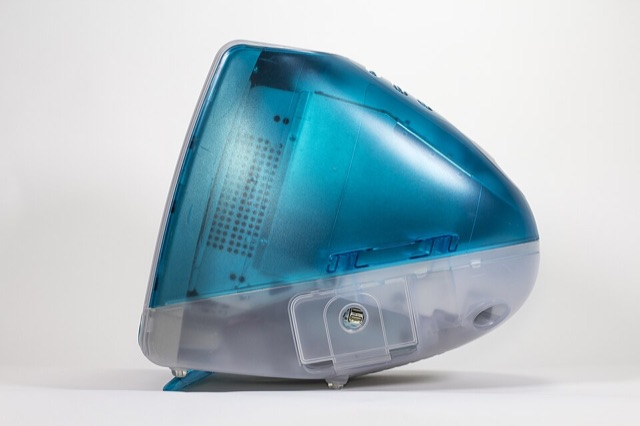
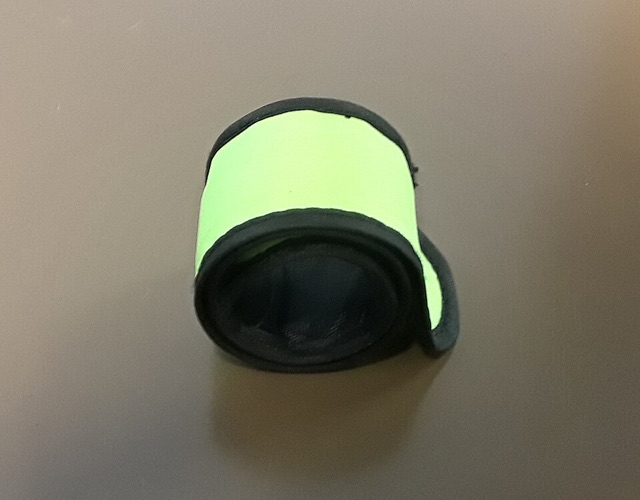

Translucent iMac 1998–2001
Tap what you had.
Find out who you were.
Photo: Stephen Hackett, CC BY-SA 4.0, via Wikimedia Commons
Flip phone 2000–2004
Your year in about a minute.
No sign-up.
Photo: Donald Trung Quoc Don, CC BY-SA 4.0, via Wikimedia Commons
Silly Bandz 2008–2010
10 cards from your year.
Get a name for who you were.
Photo: Scot Scoop, CC BY 2.0, via Wikimedia Commons

Slap bracelet 2008–2012
Send it to the friend
who was there.
Photo: Ser Amantio di Nicolao, CC BY-SA 4.0, via Wikimedia Commons